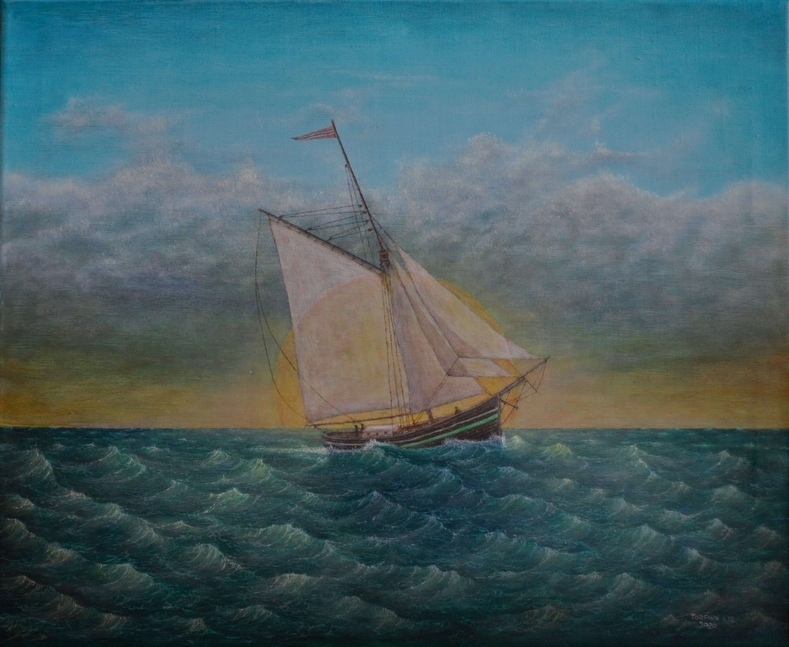

Hello! My name is Torfinn.
Since I retired late in 2018, then my pension is what pays the bills and that provides sufficient financial freedom, while painting has become my passion and pleasure, and what I mainly do on daily basis, but no stress to produce ever. So, the purpose of this website is not to post paintings for sale, as none of them are for sale in the first place, but rather a site which acts as a showcase for my work.
... fond of the wilderness you can say, and such motives transferred to the canvas.
My preferred style is figurative maritime motifs, then other motifs with water as an important component, but I also try along testing with shape and color. Some of which are painted with acrylic, while the vast majority are oil paintings on canvas. My paintings are probably far more influenced by my background and whatever I feel for and get inspired to paint, than what is currently considered as correct styles of painting. I did work 20 years at sea and otherwise then I am a dedicated sports fisherman (both at sea and up in the mountains), fond of the wilderness you can say, and such motives transferred to the canvas..
Always a mixture of fantasy and reality.
erisque enim ligula venenatis dolor. Maecenas nisl est, ultrices nec congue eget, auctor vitae massa. Fusce luctus vestibulum augue ut aliquet. Nunc sagittis dictum nisi, sed ullamcorper ipsum dignissim ac. In at libero sed nunc venenatis imperdiet sed ornare turpis. Donec vitae dui eget tellus gravida venenatis. Integer fringilla congue eros non fermentum. Sed dapibus pulvinar nibh tempor porta.
erisque enim ligula venenatis dolor. Maecenas nisl est, ultrices nec congue eget, auctor vitae massa. Fusce luctus vestibulum augue ut aliquet. Nunc sagittis dictum nisi, sed ullamcorper ipsum dignissim ac. In at libero sed nunc venenatis imperdiet sed ornare turpis. Donec vitae dui eget tellus gravida venenatis. Integer fringilla congue eros non fermentum. Sed dapibus pulvinar nibh tempor porta.